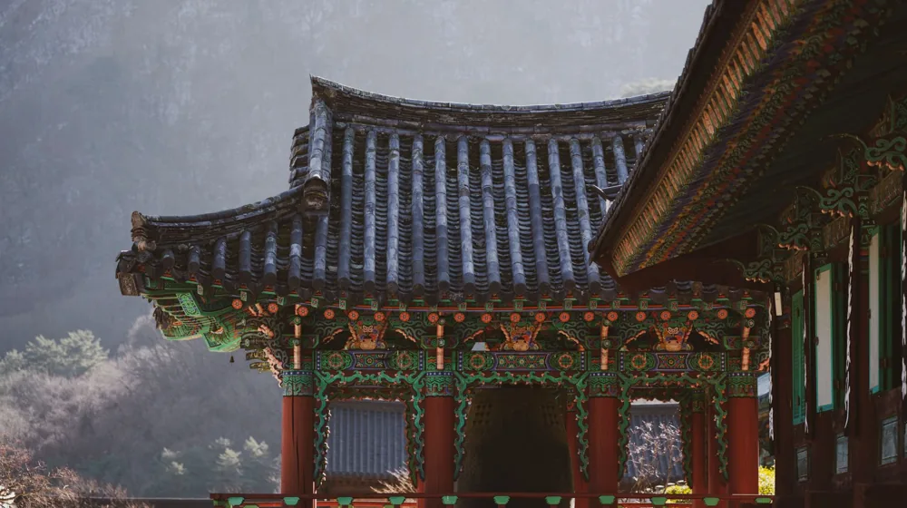

사찰 워케이션 한 달 살기 비용 비교, 진짜 이만큼 들까?
사진: TimePRO TV / Pexels (무료 이미지, 출처 표기)
복잡한 도심을 벗어나 조용한 산사에서 업무와 휴식을 동시에 취하는 '사찰 워케이션'을 고민 중이신가요? 단순 템플스테이와 달리 장기 체류 시에는 비용 부담과 업무 환경을 꼼꼼히 따져봐야 합니다. 1주일 체류부터 한 달 살기까지, 실제 필요한 비용과 사찰 선택 기준을 투명하게 비교해 드립니다.
1. 사찰 워케이션 기간별 예상 비용 비교

사찰 장기 체류 비용은 일반 템플스테이 일일 요금보다 할인된 주간/월간 특별 요금을 적용하는 경우가 많습니다. 한국불교문화사업단 공식 등록 사찰 기준으로 대략적인 비용을 정리했습니다.
※ 위 비용은 2026년 8월 기준 예시이며, 사찰의 규모나 1인실/다인실 여부에 따라 크게 달라질 수 있습니다. 정확한 비용은 가고자 하는 사찰에 직접 문의하는 것이 가장 확실합니다.
2. 워케이션에 적합한 사찰 고르는 기준 3가지
모든 사찰이 워케이션에 최적화되어 있지는 않습니다. 업무 흐름이 끊기지 않으려면 아래 세 가지 조건을 먼저 확인해야 합니다.
- 안정적인 와이파이(Wi-Fi) 환경: 산간 지역 사찰은 인터넷 신호가 약할 수 있습니다. 방사(숙소) 내에 공유기가 설치되어 있는지 반드시 사전에 확인해야 합니다.
- 일과 시간의 자율성: 새벽 예불이나 108배 등 사찰 프로그램 참여가 필수인 곳은 업무 시간을 확보하기 어렵습니다. 개인 일정을 존중해 주는 '자유 휴식형' 프로그램을 운영하는 곳을 선택하세요.
- 공동체 규칙 준수 여부: 밤 9시 이후 소등, 음주 금지, 공양 시간 엄수 등 단체 생활 규칙을 지켜야 하므로 본인의 생활 패턴과 맞는지 고민해봐야 합니다.
3. 사찰 장기 체류 시 필수 준비물 체크리스트
도시의 호텔이나 공유오피스와 달리 사찰은 편의시설이 제한적입니다. 장기 체류를 떠나기 전 아래 물품들을 꼼꼼히 챙기세요.
- 개인 텀블러와 텀블러 세정제: 사찰 내에서는 일회용품 사용이 엄격히 제한됩니다. 개인 온수 섭취를 위한 텀블러는 필수입니다.
- 개인 세면도구 및 수건: 환경 보호를 위해 샴푸, 린스, 치약, 수건 등을 제공하지 않는 사찰이 대부분입니다.
- 레이어드할 수 있는 편한 옷: 산속은 일교차가 매우 큽니다. 사찰에서 제공하는 수련복 안에 껴입을 수 있는 얇은 긴팔이나 가디건을 준비하세요.
- 무소음 키보드와 마우스: 방음이 취약한 한옥 구조 특성상 타건 소음이 이웃 방사에 쉽게 전달됩니다. 동료 참가자들을 위한 배려가 필요합니다.
4. 신청 절차 및 주의사항
사찰 워케이션을 신청하려면 우선 대한불교조계종 한국불교문화사업단에서 운영하는 공식 템플스테이 홈페이지를 방문하는 것이 가장 안전합니다. 장기 체류 프로그램은 일반 예약 페이지에 노출되지 않는 경우가 많으므로, 마음에 드는 사찰을 후보군에 두고 종무소에 전화로 직접 장기 투숙 가능 여부를 조율하는 것이 효율적입니다.
또한 사찰은 수행 공간이므로 화상 회의가 잦은 직무라면 야외나 공용 공간에서 목소리가 울리지 않도록 주의해야 합니다. 업무 전화나 미팅이 많다면 사찰 내에 별도의 회의 공간이 대여 가능한지 미리 확인하시길 권장합니다.
🔗 이 글도 함께 보면 좋아요: 스마트폰 중독 탈출: 실패 없는 디지털 디톡스 4단계 가이드
관련 추천 상품
이 포스팅은 쿠팡 파트너스 활동의 일환으로, 이에 따른 일정액의 수수료를 제공받습니다.
자주 묻는 질문(FAQ) (탭하면 펼쳐져요)
Q1. 사찰에서도 원격 근무를 위한 와이파이가 잘 터지나요?
A. 사찰마다 편차가 매우 큽니다. 최근 워케이션 전용 방사를 마련한 사찰들은 기가 와이파이를 제공하기도 하지만, 깊은 산속 사찰은 LTE 신호조차 불안정할 수 있습니다. 예약 전 종무소에 반드시 방사 내 개별 와이파이 설치 여부를 문의하셔야 합니다.
Q2. 식사는 제공되나요? 외부 음식을 반입해도 되나요?
A. 기본적으로 하루 세 번의 사찰 공양(식사)이 비용에 포함됩니다. 채식 위주의 식단이며 공양 시간은 엄격히 정해져 있습니다. 육류나 음주를 제외한 간단한 간식류는 방사 내 반입이 가능한 경우가 많으나, 사찰 규칙에 따라 냄새가 심한 외부 음식은 제한될 수 있습니다.
Q3. 하루 종일 방안에서 일만 해도 괜찮은가요?
A. 휴식형 장기 템플스테이를 선택하시면 공양 시간을 제외한 나머지 시간은 온전히 자유 시간으로 쓸 수 있어 방 안에서 업무에 집중할 수 있습니다. 다만, 최소한의 예절로서 사찰 내 보행 시 정숙을 유지하고 공양 시간에는 반드시 참석하는 것이 권장됩니다.
한눈에 보는 상품 목록
사찰 전용 편한 개량 생활한복 바지
사찰 내에서 활동하거나 장시간 앉아서 근무할 때 가장 편안하게 입을 수 있는 고무줄 밴딩 생활한복 바지입니다.
저소음 블루투스 무선 키보드 마우스 세트
방음이 취약한 전통 사찰 방사 안에서도 주변 참가자들에게 소음 피해를 주지 않고 원활히 타이핑할 수 있는 필수 아이템입니다.